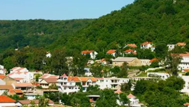
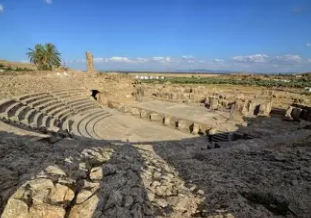
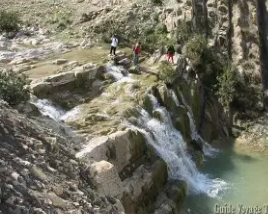
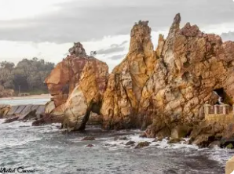
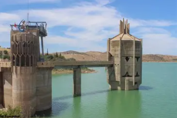

La Porte du Nord-Ouest

Jendouba est un gouvernorat situé dans le nord-ouest de la Tunisie, à la frontière avec l'Algérie. C'est une région montagneuse couverte de forêts denses et traversée par de nombreux cours d'eau.
La ville de Jendouba, chef-lieu du gouvernorat, est entourée de montagnes et de vallées verdoyantes. Elle est connue pour son climat doux et ses ressources naturelles abondantes.
Le gouvernorat se distingue par sa richesse naturelle exceptionnelle, ses sites archéologiques romains majeurs et son patrimoine forestier qui en fait l'une des régions les plus vertes de Tunisie.
Région montagneuse couverte de forêts de chênes-lièges, considérée comme le poumon vert de la Tunisie avec une biodiversité exceptionnelle.
Plusieurs barrages importants comme celui de Sidi Salem et Bou Heurtma, assurant l'irrigation et l'approvisionnement en eau du pays.
Site archéologique unique au monde avec ses villas romaines souterraines, construites pour échapper à la chaleur estivale.
Riche faune comprenant des sangliers, cerfs, chacals et une grande variété d'oiseaux dans les forêts de la Kroumirie.

Site archéologique exceptionnel datant de l'époque numide et romaine, célèbre pour ses maisons souterraines uniques au monde. Les riches Romains y construisirent des villas sur deux niveaux pour se protéger de la chaleur.

Station climatique de montagne à 800m d'altitude, entourée de forêts de chênes-lièges et de pins. Architecture coloniale française unique en Tunisie avec ses toits rouges caractéristiques.

Formations rocheuses spectaculaires émergeant de la mer, symboles de la région. Tabarka est également célèbre pour son fort génois et son festival international de jazz.

Le plus grand barrage de Tunisie, inauguré en 1981. Il joue un rôle crucial dans l'approvisionnement en eau potable et l'irrigation agricole de plusieurs gouvernorats tunisiens.